기계조립산업기사 (2004-03-07 기출문제)
1과목: 기계가공법 및 안전관리
1. 절삭공구재료로 사용하는 스텔라이트의 주성분은?
- C - Co - W - Cr
- Co - Mo - C
- Wc - Co - C
- Co - C - W - Cu
(정답률: 알수없음)

2. 바이트 끝 반지름이 1.5㎜의 바이트로 0.08 ㎜/rev 의 이송으로 깎았을 때 이론상의 최대 표면 거칠기는 얼마인가?
- 53㎛
- 5.3㎛
- 0.53㎛
- 0.⑤3㎛
(정답률: 알수없음)
3. 어미나사의 피치 8㎜인 영식 선반에서 피치 1㎜의 나사를 깎을 때의 변환 기어를 구하면?
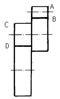
- A=20, B=80, C=90, D=45
- A=20, B=80, C=45, D=90
- A=80, B=20, C=90, D=45
- A=80, B=20, C=45, D=90
(정답률: 알수없음)
4. 5½ ° 를 분할할 때 분할 크랭크의 회전수로 맞는 것은?
- 분할크랭크 18구멍열에서 15구멍 이동시킨다.
- 분할크랭크 21구멍열에서 11구멍 이동시킨다.
- 분할크랭크 18구멍열에서 11구멍 이동시킨다.
- 분할크랭크 21구멍열에서 15구멍 이동시킨다.
(정답률: 알수없음)
5. 밀링작업에서 헬리컬 홈을 가공할 경우 일감의 비틀림각 θ =36° 28' 만큼 헬리컬 방향에 맞추어 테이블을 선회하여 고정했을 때 일감의 리드를 108㎜라면 일감의 지름은 몇 ㎜ 정도인가?
- 43.63
- 34.52
- 25.41
- 16.30
(정답률: 알수없음)
6. 밀링머신에서 할 수 없는 가공은?
- 총형 가공
- 기어 가공
- 브로칭 가공
- 나선홈 가공
(정답률: 알수없음)
7. 연삭숫돌의 입자를 결합하여 형성하는 결합체를 종류별 기호로 짝지은 것이 잘못된 것은?
- 고무 - R
- 셸락 - E
- 비닐 - PVA
- 레지노이드 - L
(정답률: 알수없음)
8. 마이크로미터의 보관방법 중 틀린 것은?
- 앤빌과 스핀들을 밀착시켜 보관할 것
- 방청유를 발라 녹이 생기지 않게 할 것
- 습기가 없는 곳에 보관할 것
- 나무상자에 보관할 것
(정답률: 알수없음)
9. 직각 삼각형의 삼각함수에 의하여 각도를 길이로 계산하여 간접적으로 각도를 구하는 방법으로, 블록 게이지와 함께 사용하여 구하는 것은?
- 오토콜리메이터
- 탄젠트 바
- 베벨프로트랙터
- 콤비네이션 세트
(정답률: 알수없음)
10. 일반적으로 손다듬질 가공에 해당되지 않는 것은?
- 해머링(hammering)
- 스크레이핑(scraping)
- 파일링(filing)
- 호닝(honing)
(정답률: 알수없음)
11. 초경 바이트를 공구대에 고정할 때의 요점을 설명한 것으로 가장 옳은 사항은?
- 바이트가 공구대에서 나온 거리는 섕크의 두께보다 짧게 한다.
- 가능하면 자루의 윗면에도 고임판을 대고 고정한다.
- 고정 나사는 하나씩 단단히 차례로 조인다.
- 자루의 끝보다 길게 고임판을 대고 고정한다.
(정답률: 알수없음)
12. 퓨즈가 끊어져 다시 끼웠을 때, 다시 끊어졌다면 어떻게 해야 하는가?
- 다시 한번 끼워본다.
- 조금 더 용량이 큰 퓨우즈를 끼운다.
- 기계의 합선여부를 검사한다.
- 굵은 동선으로 바꾸어 끼운다.
(정답률: 알수없음)
13. 빌트업에지(built-up edge)의 영향이 아닌 것은?
- 절삭 저항이 커진다.
- 다듬질 면을 거칠게 한다.
- 바이트의 수명을 짧게 한다.
- 치수 정밀도가 좋아진다.
(정답률: 알수없음)
14. 산화알루미늄(Al2O3) 미분말에 규소(Si) 및 마그네슘(Mg)의 산화물 또는 다른 산화물의 첨가물을 넣고 소결한 공구재료이며 흰색, 분홍색, 회색, 검은색 등이 있다. 다듬질가공에는 적합하나 중절삭에는 적합하지 못한 공구재료는?
- 합금공구강
- 고속도강
- 초경합금
- 세라믹
(정답률: 알수없음)
15. 수평밀링머신에서 커터의 고정방법이 아닌 것은?
- 컬러를 넣고 커터, 컬러, 지지대의 순서로 고정한다.
- 드로잉 보울트를 죄어 아버를 주축에 단단히 고정한다.
- 아버 베어링을 끼우고 아버너트를 가볍게 죈다음 지지대의 너트를 힘껏 죈 후 아버 너트를 죈다.
- 퀵체인지 어댑터를 노즈 키이에 맞추어서 주축테이퍼에 반듯하게 꽂아 넣는다.
(정답률: 알수없음)
16. 조직이 거친 연삭숫돌의 선택기준이 바르게 설명된 것은?
- 굳고 메진 재료의 연삭
- 다듬질 연삭
- 총형 연삭
- 접촉 면적이 클 때의 연삭
(정답률: 알수없음)
17. 드릴링머신에서, 얇은 철판이나 동판에 구멍을 뚫을 때에는 어떤 방법이 제일 좋은가?
- 드릴 바이스(drill vise)에 고정한다.
- 테이블에 고정한다.
- 클램프로 직접 고정한다.
- 각목을 밑에 깔고 적당한 기구로 고정한다.
(정답률: 알수없음)
18. 작업 중 정전되었을 때 안전한 행동으로 가장 거리가 먼 사항은?
- 주위의 공구를 정리한다.
- 기계의 스위치를 끈다.
- 메인 스위치를 끈다.
- 절삭공구에서 일감을 뗀다.
(정답률: 알수없음)
19. 작업중 사람이 감전되었을 때 최우선 조치는?
- 인명피해를 줄이기 위해 빨리가서 떼어 놓는다.
- 병원에 연락한다.
- 전원을 차단하고, 응급치료를 한다.
- 전기화재의 위험을 막기 위해 CO2 소화기를 사용한다.
(정답률: 알수없음)
20. 냉각효과가 크고, 윤활성도 있으며 보편적으로 많이 사용되는 절삭유는?
- 유화유
- 광유
- 동식물유
- 등유
(정답률: 알수없음)
2과목: 기계설계 및 기계재료
21. 60° 센터 게이지 (center gauge)는 무엇을 할 때 사용하나?
- 바이트 중심을 맞추는 게이지이다.
- 미터나사를 깎을 때 바이트 각도를 맞추는 게이지이다.
- 60° 의 테이퍼를 깎을때 사용하는 게이지이다.
- 위트 워어드 나사를 깎을 때 바이트 각도를 맞추는 게이지이다.
(정답률: 알수없음)
22. 선삭에서, 돌리개(dog) 및 돌림판(driving plate) 의 종류로 틀린 것은?
- 클램프 돌리개
- 곧은 돌리개
- 브로치 돌림판
- 곧은 돌림판
(정답률: 알수없음)
23. 선반의 가로 이송대에 6mm의 리드(lead)로써 100등분 눈금의 핸들이 달려있을 때 지름 36mm의 둥근막대를 지름 33mm로 절삭하려면 핸들의 눈금을 몇 눈금 돌리면 되는가?
- 20
- 25
- 30
- 35
(정답률: 알수없음)
24. 연삭숫돌 바퀴의 설치에 관한 설명으로 옳지 않은 것은?
- 숫돌바퀴는 작업 전에 플랜지판과 함께 균형을 맞추어야 한다.
- 설치할때에는 흠이나 균열이 없는지 조사한다.
- 인조 숫돌바퀴는 소성한 것으로 균열이 생기기 쉬우므로 항상 주의해야 한다.
- 설치할 때에는 필요 이상으로 단단히 조여서 사용한다.
(정답률: 알수없음)
25. 주철의 호닝작업시 공작액으로 가장 적합한 것은?
- 석유
- 모빌유
- 황화유
- 라드유
(정답률: 알수없음)
26. 슬로터에서, 일반적으로 가공할 수 없는 것은?
- 내부 스플라인
- 넓은 평면 가공
- 각 구멍
- 키이홈 가공
(정답률: 알수없음)
27. 인벌류우트 곡선을 그리는 원리를 응용한 이의 절삭방법을 무엇이라고 하는가?
- 창성법
- 총형 커터에 의한 방법
- 형판에 의한 방법
- 래크 커터에 의한 방법
(정답률: 알수없음)
28. 드릴작업할때 절삭속도 25 m/min, 드릴지름 22 mm, 이송을 0.1 mm/rev, 드릴끝의 원추높이를 6 mm라고 할 때 깊이 100 mm인 구멍을 뚫을 때 소요시간은 몇 분인가?
- 8.76
- 6.43
- 4.72
- 2.93
(정답률: 알수없음)
29. CNC선반에서 주로 많이 쓰이는 각기능의 예를 ( )안에나타낸 것이다. 잘못된 것은?
- G00(위치결정)
- G04(dwell)
- G29(나사절삭)
- G01(직선절삭)
(정답률: 알수없음)
30. 일반적으로 사용되는 칩 브레이커 종류가 아닌 것은?
- 고정형
- 평행형
- 각도형
- 홈 달린형
(정답률: 알수없음)
31. 다음 중 비중이 가장 낮은 금속은?
- 구리(Cu)
- 마그네슘(Mg)
- 알루미늄(Al)
- 크롬(Cr)
(정답률: 알수없음)
32. 황동의 자연균열(season crack)이 일어나는 원인은?
- 공기중의 암모니아, 염류등에 의한 잔류응력 때문에
- 200∼300℃에서 저온풀림을 하였기 때문에
- 표면에 도료를 칠하였기 때문에
- 열간 가공하여 재료에 메짐현상이 생기기 때문에
(정답률: 알수없음)
33. 다음 중 리드가 가장 큰 나사는?
- 18산 3줄의 휘트워드 보통나사
- 8산 2줄의 유니파이 보통나사
- 피치 1.5㎜의 1줄 미터 가는나사
- 피치 1㎜의 4줄 미터 보통나사
(정답률: 알수없음)
34. 단식 블럭 브레이크에서 브레이크 드럼과 브레이크 블럭사이의 압력 W=150kgf, 마찰계수 μ=0.25, 드럼의 지름 D=40cm라고 할때 브레이크 토크는 몇 kgf∙mm인가?
- 750
- 7500
- 15000
- 1500
(정답률: 알수없음)
35. 안지름 60mm, 파이프의 두께 4mm의 강철 파이프에 내압력 20kgf/cm2의 증기를 공급할 때 파이프에 발생하는 최대 원주응력은 얼마인가? (단, 얇은 원통으로 보고 계산한다.)
- 75 kgf/cm2
- 150 kgf/cm2
- 300 kgf/cm2
- 1200 kgf/cm2
(정답률: 알수없음)
36. 초경 합금 공구에 대한 설명 중 옳지 않은 것은?
- 금속 탄화물의 분말을 소결하여 만든 것이다.
- 알루미나가 주성분이며, 고온절삭에 적합하다.
- 경도가 큰 대신 항절력이 약한 결점이 있다.
- 현재 쓰이는 탄화물로는 WC, TiC, TaC등이 있다.
(정답률: 알수없음)
37. 고체 침탄할 때 촉진제로 사용되는 화합물은?
- 탄산바륨(BaCO3)
- 시안화나트륨(NaCN)
- 염화칼륨(KCl)
- 염화칼슘(CaCl2)
(정답률: 알수없음)
38. 퓨즈, 활자, 안전장치, 정밀모형 등에는 저 용융점 합금이 사용되는데 이에 해당되지 않는 것은?
- 우드메탈(woods Metal)
- 리포위쯔 합금(Lipouitz Alloy)
- 뉴톤 합금(Newton Alloy)
- 다우메탈(Dow Metal)
(정답률: 알수없음)
39. 스프링의 기능 중 틀린 것은?
- 진동의 완화
- 하중의 조정
- 동력 전달
- 충격 에너지의 흡수
(정답률: 알수없음)
40. 탄소강에서 황의 영향은 무엇인가?
- 강도의 증가
- 충격값의 증가
- 쾌삭성의 감소
- 적열 취성의 원인
(정답률: 알수없음)
3과목: 기계제도 및 CNC 공작법
41. 다음중 일반적으로 안전율을 산정할 때 사용되는 기준 강도를 짝지은 것으로 옳지 않은 것은?
- 반복하중 - 피로한도
- 정하중 - 탄성한도
- 고온환경 - 크리프한도
- 충격하중 - 충격치
(정답률: 알수없음)
42. 스파이럴각이 0인 한 쌍의 스파이럴 베벨기어를 무엇이라고 하는가?
- 크라운 기어
- 인터널 기어
- 마이터 기어
- 제롤 기어
(정답률: 알수없음)
43. KS 기계제도 도면 규격 A 4 의 치수는?
- 148 × 210
- 210 × 297
- 420 × 594
- 297 × 420
(정답률: 알수없음)
44. 대상물의 일부를 파단한 경계 또는 일부를 떼어낸 경계를 표시하는 선으로 가장 적합한 것은?
- 가는 일점쇄선
- 가는 이점쇄선
- 굵은 실선과 가는 일점쇄선
- 불규칙한 파형의 가는 실선 또는 지그재그선
(정답률: 알수없음)
45. 물체의 한쪽면이 경사되어 평면도나 측면도로는 물체의 형상을 나타내기 어려울 경우 가장 적합한 투상법은?
- 요점 투상법
- 회전 투상법
- 부분 투상법
- 보조 투상법
(정답률: 알수없음)
46. 보기 도면과 같이 끼워맞춤부분 치수가
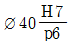
로 기입되어 있을 때, 끼워 맞춤의 종류는?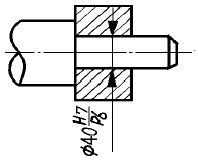
- 헐거운 끼워 맞춤
- 중간 끼워 맞춤
- 억지 끼워 맞춤
- 단면 끼워 맞춤
(정답률: 알수없음)
47. 다음 중 기하공차의 종류별 기호에서 선의 윤곽도 공차를 나타내는 기호는?
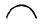
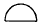
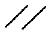
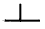
(정답률: 알수없음)
48. 그림과 같이 가공에 의한 줄무늬 방향이 동심원 모양 일 때 기호를 나타낸 것은?
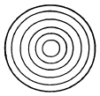
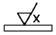
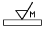
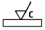
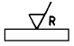
(정답률: 알수없음)
49. 그림과 같은 비중이 7.7 인 연강제 축의 중량은 약 몇 gr(그램) 인가?
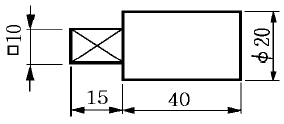
- 36
- 72
- 108
- 144
(정답률: 알수없음)
50. 도면의 테이퍼가 2. 21. 일 때 ( )의 치수로 적합한 것는?
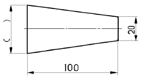
- 22.5
- 25
- 27.5
- 30
(정답률: 알수없음)
51. 보기와 같은 정면도와 우측면도에 대한 평면도로 가장 적합한 것은?
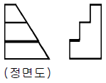
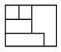
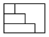
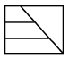
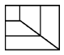
(정답률: 알수없음)
52. 보기의 입체도를 투상한 투상도 중 잘못 투상된 것은?
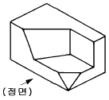
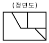
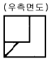
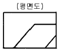
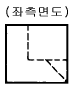
(정답률: 알수없음)
53. 보기와 같은 입체도를 화살표 방향에서 본 투상도로 가장 적합한 것은?
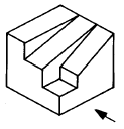
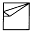
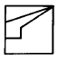
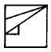
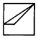
(정답률: 알수없음)
54. 도면에 나사의 표시가 M 50 × 2 - 6H 로 만 기입되어 있을 경우 다음 중 올바른 설명은?
- 감김방향은 왼나사이다.
- 나사의 피치는 알 수 없다.
- M20×2의 2는 수량 2개를 의미한다.
- 6H 는 암나사의 등급 표시이다.
(정답률: 알수없음)
55. 변압기의 1차권수가 180회이고, 2차권수가 120회인 경우 변압기 2차측 전압이 100V이면 1차전압은 몇 V 인가?
- 90
- 120
- 150
- 180
(정답률: 알수없음)
56. 무효전력이 없는 부하는?
- 저항선 부하
- 유도전동기 부하
- 승강기 부하
- 에어콘 부하
(정답률: 알수없음)
57. 그림과 같은 계전기 접점회로의 논리식은?
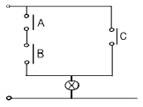
- ABC
- A+B+C
- AB+C
- (A+B)C
(정답률: 알수없음)
58. 절연저항을 측정할 수 있는 측정기기는?
- 훅크온메타
- 메거
- 회로시험기
- 휘이트스토운브리지
(정답률: 알수없음)
59. 두 자극간의 거리를 2배로 하면 자극사이에 작용하는 힘은 몇 배로 되는가?
- 1/4배
- 1/2배
- 2배
- 4배
(정답률: 알수없음)
60. 그림과 같은 회로의 합성 저항값은 몇 Ω 인가?
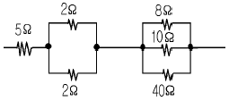
- 6
- 10
- 26
- 67
(정답률: 알수없음)